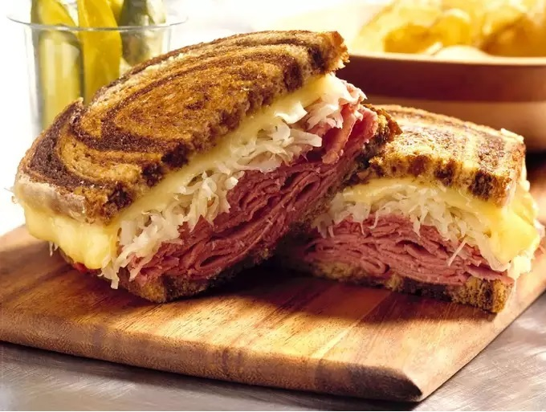

Reuben

Reuben Sandwich
A Reuben is a grilled sandwich featuring corned beef on rye bread alongside swiss cheese, sauerkraut, and
thousand island dressing.
Ingredients
- 8 slices rye bread
- 1/2 cup Thousand Island dressing
- 8 slices swiss cheese
- 8 slices deli sliced corned beef
- 1 cup sauerkraut, drained
- 2 tablespoons better, softened
Steps
- Preheat a large griddle or skillet over medium heat
- Spread one side of bread slices evenly with Thousand Island dressing
- On four bread slices, layer one slice with Swiss cheese, 2 slices corned beef, 1/4 cup sauerkraut,
and a second slice of Swiss cheese
- Top with remaining bread slices, dressing side down. Butter top of each sandwich
- Place sandwiches, butter-side down on the preheated griddle; butter the top of each sandwich with remaining
butter.
Grill until both sides are golden brown, about 5 minutes per side. Serve hot.